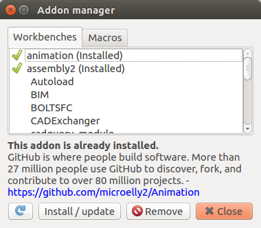

Addon manager
|
| Menu location
|
| Tools → Addon manager
|
| Workbenches
|
| N/A
|
| Default shortcut
|
| None
|
| See also
|
| Macros
|
|
Der Addon-Manager ist ein Tool zum Installieren und Verwalten von Add-On-Workbenches und Makros, die von der FreeCAD-Community zur Verfügung gestellt werden. Die vollständige Liste der Workbenches finden Sie im add-ons repository.
available in version 0.17

How to use
- Öffnen Sie das Menü "Extras → Addon-Manager".
- Um eine Workbench oder ein Makro zu installieren: Scrollen Sie durch die Liste und wählen Sie das Add-On. Die Beschreibung des Add-Ons wird unter der Liste sowie der Link zur Add-On-Seite angezeigt. Drücken Sie dann die Taste Install / update.
- Klicken Sie für Macros auf die Registerkarte Makros.
- So entfernen Sie eine Workbench oder ein Makro: blättern Sie durch die Liste, wählen Sie das Add-on aus und drücken Sie die Taste Remove Taste.
- Um eine Workbench oder ein Makro zu aktualisieren: Scrollen Sie durch die Liste, wählen Sie das Add-on und drücken Sie die Taste Install / update.
- Nach Updates suchen: Drücken Sie die Taste . ( Hinweis: das Symbol kann je nach Betriebssystem anders aussehen. ) Verfügbare Updates werden unterhalb der Liste angezeigt. Durch erneutes Drücken der Update-Taste werden alle Updates gleichzeitig aktualisiert.
Einschränkungen
- Die Add-Ons gehören nicht zum offiziellen FreeCAD-Paket und werden vom FreeCAD-Team nicht unterstützt. Sie sollten die Informationen auf jeder der Add-On-Seiten lesen, bevor Sie sie installieren, um sicherzustellen, dass Sie wissen, was Sie installieren.
- Fehlerberichte und Feature-Anfragen sollten direkt auf jeder Add-On-Seite erfolgen.
{kind=link}
{kind=link}